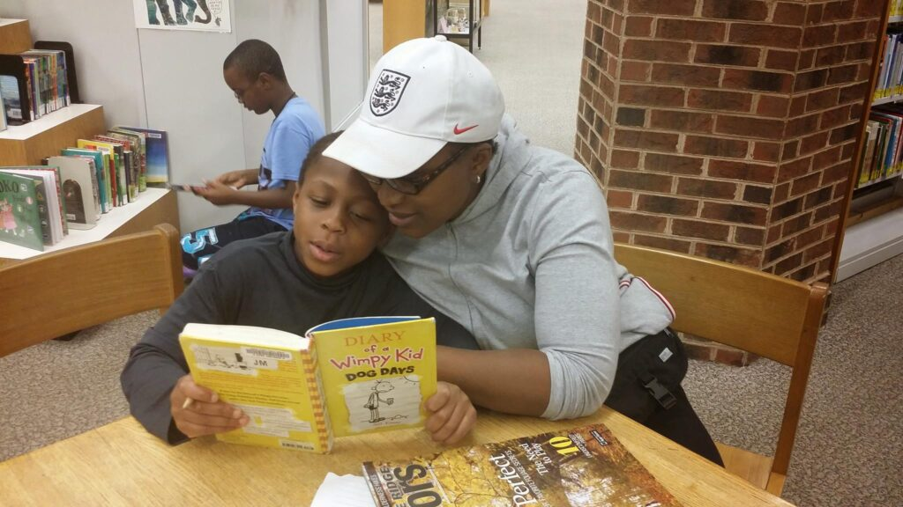
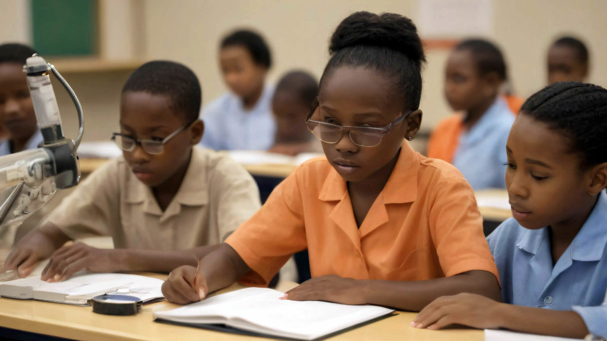

Education & Skill Development
AYM combines community learning spaces with online resources to help rural students reach quality education and learning support.
Join the Rural Education Revolution
In rural communities, access to quality education and qualified teachers—especially in science and information technology—can be limited.
AYM’s supplementary education approach combines in-person learning spaces with online platforms to extend access to lessons, virtual tutors and interactive learning.

Learning in the community and online
A flexible mix of physical and digital learning gives students more ways to take part.
Local educational centers
Community learning spaces support hands-on activities, science exploration, collaboration and belonging.
Online learning platforms
Students can access educational content, virtual tutors and interactive learning beyond geographic limits.
Flexible access to learning
More flexibility
Choose how and when to learn through a blend of in-person and online education.
Self-directed learning
Online resources can help students explore lessons at their own pace.
Critical thinking
Learning activities can develop problem-solving and independent thought.
Science & technology
Build a foundation for future opportunities in science and technology fields.
Still have questions?
Can't find the answer you're looking for? Please chat to our friendly team.